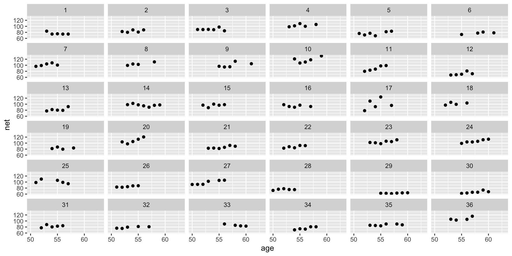
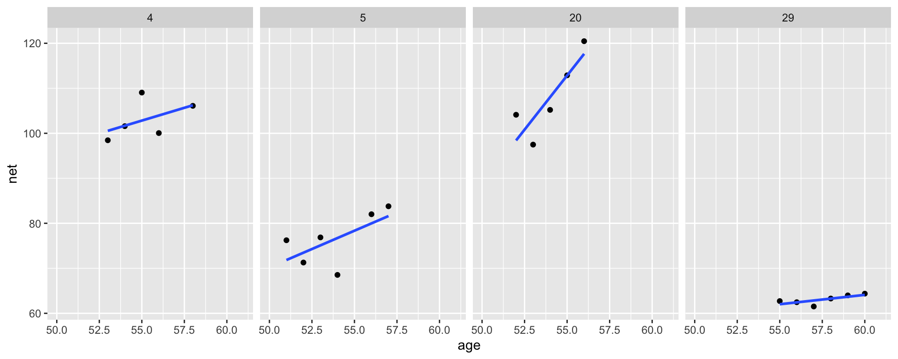
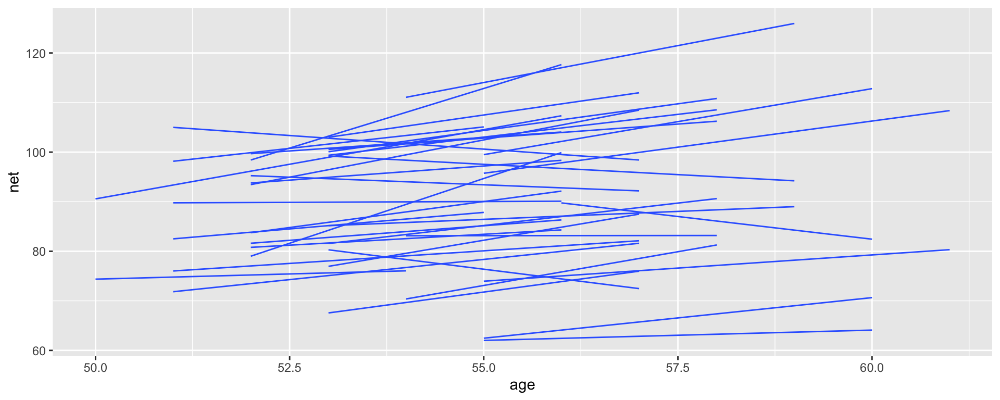

(Normal) Hierarchical Models with Predictors
Note that examples in this lecture a modified version of Chapter 17 of Bayes Rules! book
Packages
Data
Hierarchical model with varying intercepts
Layer 1:
\(Y_{ij} | \mu_j, \sigma_y \hspace{-0.075in} \sim \text{model of how song popularity varies WITHIN artist } j\)
Layer 2:
\(\mu_j | \mu, \sigma_\mu \hspace{-0.075in} \sim \text{model of how the typical popularity} \mu_j \text{varies BETWEEN artists}\)
Layer 1: Variability within runner
The first layer of the simple Normal hierarchical model assumes that each runner’s net running times \(Y_{ij}\) vary normally around their own mean time \(\mu_j\), with no consideration of their age \(X_{ij}\):
\[Y_{ij} | \mu_{j}, \sigma_y \sim N(\mu_{j}, \sigma_y^2)\]
To incorporate information about age into our understanding of running times within runners, we can replace the \(\mu_{j}\) with runner-specific means \(\mu_{ij}\), which depend upon the runner’s age in their \(i\)th race, \(X_{ij}\).
\[\mu_{ij} = \beta_{0j} + \beta_1 X_{ij}\]
Thus, the first layer of our hierarchical model describes the relationship between net times and age within each runner \(j\) by:
\[\begin{equation} Y_{ij} | \beta_{0j}, \beta_1, \sigma_y \sim N(\mu_{ij}, \sigma_y^2) \;\; \text{ where } \; \mu_{ij} = \beta_{0j} + \beta_1 X_{ij} \end{equation}\]
Note that \(\beta_{0j}\) depends upon \(j\), and thus is runner- or group-specific:
- \(\beta_{0j}\) = intercept of the regression model for runner \(j\).
The other parameters are global, or shared across all runners \(j\)
- \(\beta_1\) = global age coefficient, i.e., the typical change in a runner’s net time per one year increase in age; and
- \(\sigma_y\) = within-group variability around the mean regression model \(\beta_{0j} + \beta_1 X_{ij}\), and hence a measure of the strength of the relationship between an individual runner’s time and their age.
The first layer of our hierarchical model assumes that relationships between running time and age randomly vary from runner to runner, having different intercepts \(\beta_{0j}\) but a shared age coefficient \(\beta_1\).
Layer 2: Variability between runners
In this layer we capture how the relationships between running time and age vary from runner to runner, i.e., between runners.
In this layer will model variability in the intercept parameters \(\beta_{0j}\).
\[\begin{equation} \beta_{0j} | \beta_0, \sigma_0 \stackrel{ind}{\sim} N(\beta_0, \sigma_0^2) \end{equation}\]
This layer of the hierarchical model which depends upon two new parameters:
- \(\beta_0\) = the global average intercept across all runners, i.e., the average runner’s baseline speed;
- \(\sigma_0\) = between-group variability in intercepts \(\beta_{0j}\), i.e., the extent to which baseline speeds vary from runner to runner.
Regression model within runner \(j\): \(Y_{ij} | \beta_{0j}, \beta_1, \sigma_y \sim N(\mu_{ij}, \sigma_y^2) \text{ with } \mu_{ij} = \beta_{0j} + \beta_1 X_{ij}\)
variability in baseline speeds BETWEEN runners: \(\beta_{0j} | \beta_0, \sigma_0 \stackrel{ind}{\sim} N(\beta_0, \sigma_0^2)\)
Normal hierarchical regression assumptions
Let \(Y_{ij}\) and \(X_{ij}\) denote observations for the \(i\)th observation in group \(j\). The appropriateness of the Normal hierarchical regression model of \(Y_{ij}\) by \(X_{ij}\) depends upon the following assumptions.
- Structure of the data
Conditioned on predictor \(X_{ij}\), the outcomes \(Y_{ij}\) on any one group \(j\) are independent of those on another group \(k\), \(Y_{ik}\). However, different data points within the same group \(j\), \(Y_{ij}\) and \(Y_{hj}\), are correlated.
(Continued on the next slide)
Structure of the relationship
Within any group \(j\), the typical outcome of \(Y_{ij}\) ( \(\mu_{ij}\) ) can be written as a linear function of predictor \(X_{ij}\).Structure of the variability within groups
Within any group \(j\) and at any predictor value \(X_{ij}\), the observed values of \(Y_{ij}\) will vary normally around mean \(\mu_{ij}\) with consistent standard deviation \(\sigma_y\).Structure of the variability between groups
The group-specific baselines or intercepts, \(\beta_{0j}\), vary normally around a global intercept \(\beta_0\) with standard deviation \(\sigma_0\).
Connecting the hierarchical and complete pooled models
The complete pooled model is a special case of the random intercepts model. These two models are equivalent when \(\sigma_0 = 0\), i.e., when the intercepts do not differ from group to group.
Another way to think about it
Equivalently, we can think of the runner-specific intercepts as random tweaks or adjustments \(b_{0j}\) to \(\beta_0\),
\[\beta_{0j} = \beta_0 + b_{0j}\]
where these tweaks are normal deviations from 0 with standard deviation \(\sigma_0\):
\[b_{0j} \sim N(0, \sigma_0^2)\]
Suppose that some runner \(j\) has a baseline running speed of \(\beta_{0j} = 24\) minutes, whereas the average baseline speed across all runners is \(\beta_0 = 19\) minutes. Thus, at any age, runner \(j\) tends to run 5 minutes slower than average. That is, \(b_{0j} = 5\) and
\[\beta_{0j} = \beta_0 + b_{0j} = 19 + 5 = 24\]
In general, then, we can reframe Layers 1 and 2 of our hierarchical model as follows:
\[\begin{equation} \begin{split} Y_{ij} | \beta_{0j}, \beta_1, \sigma_y & \sim N(\mu_{ij}, \sigma_y^2) \;\; \text{ with } \;\; \mu_{ij} = (\beta_0 + b_{0j}) + \beta_1 X_{ij} \\ b_{0j} | \sigma_0 & \stackrel{ind}{\sim} N(0, \sigma_0^2) \end{split} \end{equation}\]
\[\begin{equation} \begin{split} Y_{ij} | \beta_{0j}, \beta_1, \sigma_y & \sim N(\mu_{ij}, \sigma_y^2) \;\; \text{ with } \;\; \mu_{ij} = \beta_{0j} + \beta_1 X_{ij} \\ \beta_{0j} | \beta_0, \sigma_0 & \stackrel{ind}{\sim} N(\beta_0, \sigma_0^2) \\ \end{split} \end{equation}\]
Most runners’ times do tend to increase with age, and there is variability between the runners themselves – some tend to be faster than others.
There are a whopping 40 parameters in our model: 36 runner-specific intercept parameters ( \(\beta_{0j}\) ) in addition to 4 global parameters (\(\beta_0, \beta_1, \sigma_y, \sigma_0\)).
Global relationship
Consider the global relationship between running time and age for the typical runner:
\[\beta_0 + \beta_1 X\]
Summaries for \(\beta_0\) and \(\beta_1\), which are fixed across runners, can be shown with.
# A tibble: 2 × 5
effect term estimate std.error statistic
<chr> <chr> <dbl> <dbl> <dbl>
1 fixed (Intercept) 21.8 12.3 1.77
2 fixed age 1.24 0.220 5.65The typical runner tends to slow down about 1.24 minutes per year. Note that \(\hat \beta_0 = 21.8\)
Group Relationships
To examine the runner-specific relationships between net running time and age we have
\[\hat \beta_{0j} + \hat \beta_1 X_{ij} \; = (\hat \beta_0 + b_{0j}) + \hat \beta_1 X_{ij} = (21.8 + b_{0j}) + 1.24 X_{ij}\]
# A tibble: 4 × 6
effect group level term estimate std.error
<chr> <chr> <chr> <chr> <dbl> <dbl>
1 ran_vals runner 1 (Intercept) -13.4 2.28
2 ran_vals runner 2 (Intercept) -4.81 2.28
3 ran_vals runner 35 (Intercept) -4.13 2.09
4 ran_vals runner 36 (Intercept) 16.7 2.54The estimate column would give us \(b_{0j}\).
# A tibble: 8 × 5
effect group level term estimate
<chr> <chr> <chr> <chr> <dbl>
1 ran_coefs runner 1 (Intercept) 8.39
2 ran_coefs runner 2 (Intercept) 17.0
3 ran_coefs runner 35 (Intercept) 17.6
4 ran_coefs runner 36 (Intercept) 38.4
5 ran_coefs runner 1 age 1.24
6 ran_coefs runner 2 age 1.24
7 ran_coefs runner 7 age 1.24
8 ran_coefs runner 8 age 1.24The first 36 rows would give us \(\beta_{0j}\). These values can also be achieved by adding 21.8 (\(\hat \beta_0\)) to \(b_{0j}\)s from previous slide.
Runner 2 seems to have a slower baseline than Runner 1 (\(17.0-8.39 = 8.61\)). Thus, at any shared age, we would expect runner 2 to run roughly 8.61 minutes slower than runner 1.
The models for our 36 runners \(j\) as calculated from the hierarchical random intercepts model (gray), with the global model (blue).
Posterior analysis of within- and between-group variability
\(\sigma_y\) measures the variability from the mean regression model within each runner.
\(\sigma_0\) measures the variability in baseline running speeds between the runners.
# A tibble: 2 × 4
effect group term estimate
<chr> <chr> <chr> <dbl>
1 ran_pars runner sd__(Intercept) 13.2
2 ran_pars Residual sd__Observation 5.19For a given runner \(j\), we estimate that their observed running time at any age will deviate from their mean regression model by roughly 5.19 minutes ( \(\sigma_y\) ).
In contrast, we expect that baseline speeds vary by roughly 13.2 minutes from runner to runner ( \(\sigma_0\) ).
Comparatively then, the posterior results suggest that \(\sigma_y < \sigma_0\) – there’s greater variability in the models between runners than variability from the model within runners.
Recall:
\[\text{Var}(Y_{ij}) = \sigma_0^2 + \sigma_y^2 .\] \[\text{Var}(Y_{ij}) = 13.2^2 + 5.19^2 = 201.1761 .\]
\[\frac{13.2^2}{201.1761} = 0.8661069\] \[\text{vs.}\] \[\frac{5.19^2}{201.1761} = 0.1338931\]
Thus, proportionally differences between runners account for roughly 87% (the majority!) of the total variability in racing times, with fluctuations among individual races within runners explaining the other 13%:
Hierarchical model with varying intercepts & slopes
Observed trends in running time versus age for the 36 subjects
Model building
Our goal is to build a model which recognizes that in the relationship between running time and age, both the intercept (i.e., baseline speed) and slope (i.e., rate at which speed changes with age) might vary from runner to runner.
\[\begin{equation} Y_{ij} | \beta_{0j}, \beta_{1j}, \sigma_y \sim N(\mu_{ij}, \sigma_y^2) \;\; \text{ where } \mu_{ij} = \beta_{0j} + \beta_{1j} X_{ij} . \end{equation}\]
Previously we assumed that the runner-specific intercepts \(\beta_{0j}\) are Normally distributed around some global intercept \(\beta_0\) with standard deviation \(\sigma_0\), we now also assume that the runner-specific age coefficients \(\beta_{1j}\) are Normally distributed around some global age coefficient \(\beta_1\) with standard deviation \(\sigma_1\):
\[\begin{equation} \beta_{0j} | \beta_0, \sigma_0 \sim N(\beta_0, \sigma_0^2) \;\;\;\; \text{ and } \;\;\;\; \beta_{1j} | \beta_1, \sigma_1 \sim N(\beta_1, \sigma_1^2) \end{equation}\]
\(\beta_{0j}\) and \(\beta_{1j}\) work together to describe the model for runner \(j\), and thus are correlated. Let \(\rho \in [-1,1]\) represent the correlation between \(\beta_{0j}\) and \(\beta_{1j}\). To reflect this correlation, we represent the joint Normal model of \(\beta_{0j}\) and \(\beta_{1j}\) by
\[\begin{equation} \left(\begin{array}{c} \beta_{0j} \\ \beta_{1j} \\ \end{array}\right) \vert \beta_0, \beta_1, \sigma_0, \sigma_1 \;\; \sim \;\; N\left( \left(\begin{array}{c} \beta_0 \\ \beta_1 \\ \end{array}\right), \; \Sigma \right) \end{equation}\]
where \((\beta_0, \beta_1)\) is the joint mean and \(\Sigma\) is the 2x2 covariance matrix which encodes the variability and correlation amongst \(\beta_{0j}\) and \(\beta_{1j}\):
\[\begin{equation} \Sigma = \left(\begin{array}{cc} \sigma_0^2 & \rho \sigma_0 \sigma_1 \\ \rho \sigma_0 \sigma_1 & \sigma_1^2 \\ \end{array}\right) \end{equation}\]
On the next slide, plot (a) illustrates the scenario in which there’s a strong negative correlation between \(\beta_{0j}\) and \(\beta_{1j}\) – models that start out lower (with small \(\beta_{0j}\)) tend to increase at a more rapid rate (with higher \(\beta_{1j}\)). In plot (c) there’s a strong positive correlation between \(\beta_{0j}\) and \(\beta_{1j}\) – models that start out higher (with larger \(\beta_{0j}\)) also tend to increase at a more rapid rate (with higher \(\beta_{1j}\)). In between these two extremes, plot (b) illustrates the scenario in which there’s no correlation between the group-specific intercepts and slopes.
hierarchical random intercepts and slopes model:
\[\begin{equation} \begin{array}{rl} Y_{ij} | \beta_{0j}, \beta_{1j}, \sigma_y & \sim N(\mu_{ij}, \sigma_y^2) \;\; \text{ where } \; \mu_{ij} = \beta_{0j} + \beta_{1j} X_{ij} \\ & \\ \left(\begin{array}{c} \beta_{0j} \\ \beta_{1j} \\ \end{array}\right) \vert \beta_0, \beta_1, \sigma_0, \sigma_1 & \sim N\left( \left(\begin{array}{c} \beta_0 \\ \beta_1 \\ \end{array}\right), \; \Sigma \right) \\ \end{array} \end{equation}\]
Equivalently, we can re-express the random intercepts and slopes as random tweaks to the global intercept and slope: \(\mu_{ij} = (\beta_0 + b_{0j}) + (\beta_1 + b_{1j}) X_{ij}\) with
\[\left(\begin{array}{c} b_{0j} \\ b_{1j} \\ \end{array}\right) \vert \; \sigma_0, \sigma_1 \sim N\left( \left(\begin{array}{c} 0 \\ 0 \\ \end{array}\right), \; \Sigma \right)\]
Connecting our hierarchical models
The random intercepts model is a special case of random intercepts and random slopes model. When \(\sigma_1 = 0\), i.e., when the group-specific age coefficients do not differ from group to group, these two models are equivalent.
The covariance matrix has information about three separate pieces:
the correlation between the group-specific intercepts and slopes, \(\rho\);
the combined degree to which the intercepts and slopes vary by group, \(\sigma_0^2 + \sigma_1^2\);
the relative proportion of this variability between groups that’s due to differing intercepts vs differing slopes,
\[\pi_0 = \frac{\sigma_0^2}{\sigma_0^2 + \sigma_1^2} \;\; \text{ vs } \;\; \pi_1 = \frac{\sigma_1^2}{\sigma_0^2 + \sigma_1^2}\]
In general, \(\pi_0\) and \(\pi_1\) always sum to 1, and thus have a push-and-pull relationship.
For example, when \(\pi_0 \approx 1\) and \(\pi_1 \approx 0\), the variability in intercepts ( \(\sigma_0^2\) ) is large in comparison to the variability in slopes ( \(\sigma_1^2\) ).
Thus, the majority of the variability between group-specific models is explained by differences in intercepts (plot a).
In contrast, when \(\pi_0 \approx 0\) and \(\pi_1 \approx 1\), the majority of the variability between group-specific models is explained by differences in slopes (plot c).
In between these extremes, when \(\pi_0\) and \(\pi_1\) are both approximately 0.5, roughly half of the variability between groups can be explained by differing intercepts and the other half by differing slopes (plot b).
Global and group-specific parameters
Remember thinking that the 40 parameters in the random intercepts model was a lot? This new model has 78 parameters: 36 runner-specific intercept parameters \(\beta_{0j}\), 36 runner-specific age coefficients \(\beta_{1j}\), and 6 global parameters ( \(\beta_0, \beta_1, \sigma_y, \sigma_0, \sigma_1, \rho\) ). Let’s examine these piece by piece, starting with the global model of the relationship between running time and age,
\[\beta_0 + \beta_1 X\]
Summaries for \(\beta_0\) and \(\beta_1\), which are fixed across runners, can be shown with.
# A tibble: 2 × 5
effect term estimate std.error statistic
<chr> <chr> <dbl> <dbl> <dbl>
1 fixed (Intercept) 21.7 12.1 1.78
2 fixed age 1.25 0.229 5.45The global model is \(21.7 + 1.25 \text{age}\)
# A tibble: 7 × 5
effect group level term estimate
<chr> <chr> <chr> <chr> <dbl>
1 ran_coefs runner 1 (Intercept) 31.7
2 ran_coefs runner 2 (Intercept) 24.9
3 ran_coefs runner 35 (Intercept) 24.9
4 ran_coefs runner 36 (Intercept) 10.6
5 ran_coefs runner 1 age 0.817
6 ran_coefs runner 35 age 1.11
7 ran_coefs runner 36 age 1.75 The slopes do differ, but not as drastically as we expected.
On average, runner 1’s running time increases by just 0.813 minute per year, whereas runner 36’s increases by 1.75 minutes per year.
# A tibble: 4 × 4
effect group term estimate
<chr> <chr> <chr> <dbl>
1 ran_pars runner sd__(Intercept) 11.3
2 ran_pars runner cor__(Intercept).age -0.926
3 ran_pars runner sd__age 0.414
4 ran_pars Residual sd__Observation 5.14 The standard deviation \(\sigma_1\) in the age coefficients \(\beta_{1j}\) is likely around 0.411 minutes per year. On the scale of a 10-mile race, this indicates very little variability between the runners when it comes to the rate at which running times change with age.
Per the output for \(\sigma_y\), an individual runner’s net times tend to deviate from their own mean model by roughly 5.12 minutes.
There’s a strong negative correlation of roughly -0.934 between the runner-specific \(\beta_{0j}\) and \(\beta_{1j}\) parameters. Thus, it seems that runners that start off faster tend to slow down at a faster rate.
Is it worth adding all the additional parameters?
Data: running
Models:
running_model_1: net ~ age + (1 | runner)
running_model_2: net ~ age + (age | runner)
npar AIC BIC logLik deviance Chisq Df Pr(>Chisq)
running_model_1 4 1267.2 1280.0 -629.58 1259.2
running_model_2 6 1265.9 1285.2 -626.97 1253.9 5.2306 2 0.07315 .
---
Signif. codes: 0 '***' 0.001 '**' 0.01 '*' 0.05 '.' 0.1 ' ' 1